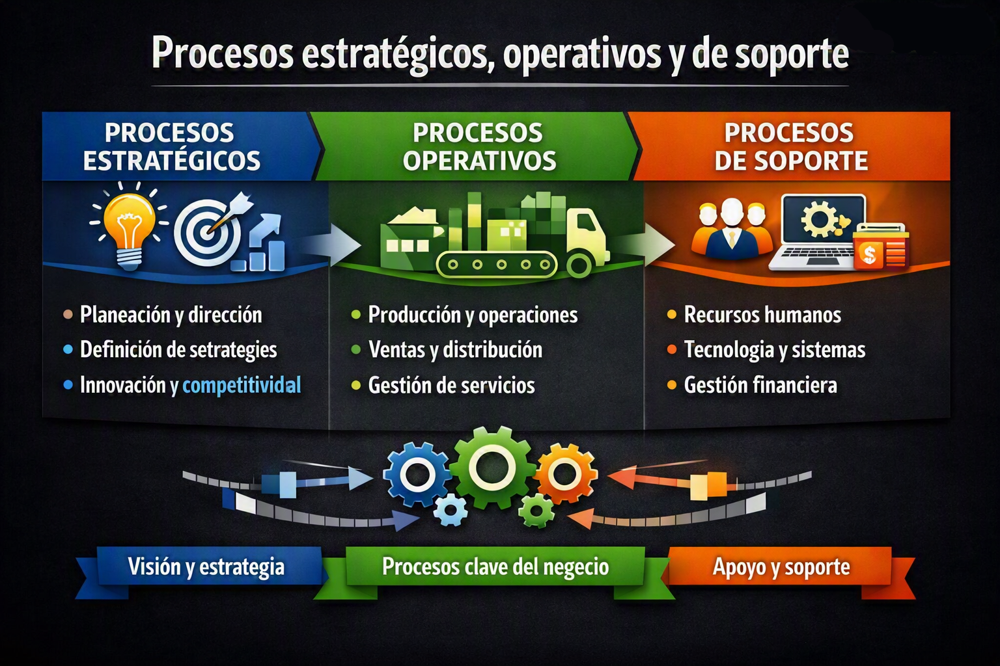
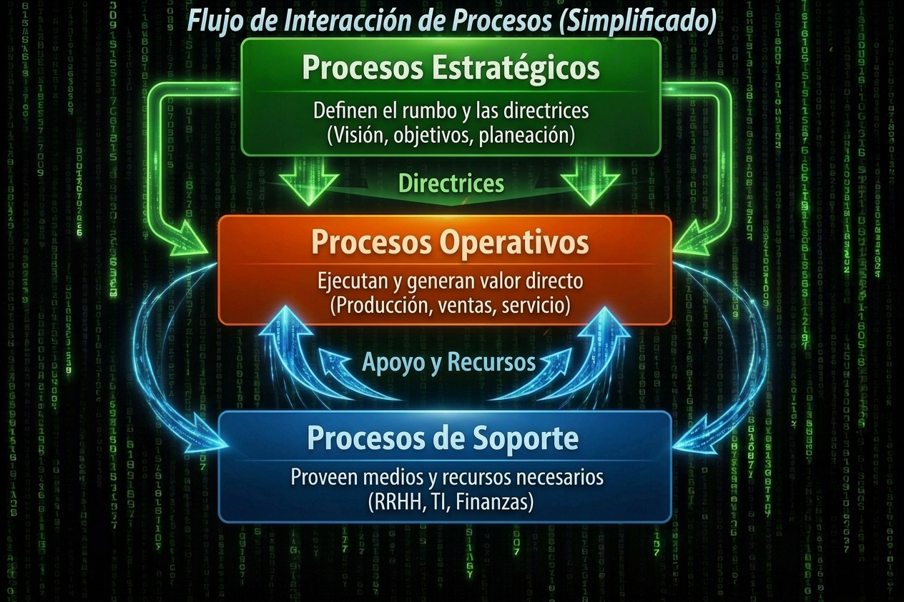

Procesos de negocio
Toda organización funciona a través de procesos, aunque no siempre los tenga documentados. En esta unidad vas a aprender a identificarlos, clasificarlos y modelarlos usando herramientas como SIPOC y BPMN, bajo el marco de la norma ISO 9001.
1. Fundamentos y conceptos
Antes de clasificar o modelar, hay que entender qué es un proceso. Distintos autores y normas lo definen con matices diferentes, pero todos coinciden en una idea central: transformar entradas en salidas con un propósito.
Proceso
"Serie de actividades mutuamente relacionadas o que interactúan entre ellas, las cuales transforman elementos de entrada en elementos de salida".
Proceso de negocio
"Secuencia o flujo de actividades en una organización con el objetivo de realizar un trabajo".
Otras definiciones de referencia
No existe una línea clara que separe una actividad de un proceso. La distinción es cuestión de escala: lo que para un área es un proceso completo, para otra puede ser una sola actividad dentro de uno mayor. Por eso se habla de niveles de agregación en lugar de diferencias absolutas.
2. Visión funcional vs. visión por procesos
La misma organización puede leerse de dos maneras muy distintas. Según cómo la mirés, los problemas que encontrás —y las soluciones que proponés— cambian radicalmente.
Visión funcional / departamental
Es la forma más tradicional de organizar una empresa, y tiene raíces profundas: viene de los principios de administración de Henry Fayol a principios del siglo XX. La lógica es simple: agrupar personas con habilidades similares en un mismo departamento —Ventas, Finanzas, Producción, RRHH— bajo un responsable claro, con sus propias métricas y, frecuentemente, su propio sistema de información.
La especialización tiene ventajas reales, pero genera un efecto secundario conocido como "silos organizacionales": cada área optimiza sus propios objetivos sin ver el flujo completo. El área de Compras quiere minimizar inventario; Producción necesita no quedarse sin insumos. Ninguna está equivocada desde su perspectiva, pero el conflicto existe. ¿Quién lo resuelve?
- Los errores que ocurren en las fronteras entre áreas suelen quedar sin responsable claro
- La experiencia del cliente se fragmenta: cada área entrega su parte, nadie gestiona el flujo completo
- La duplicación de datos y esfuerzos crece con el tiempo, especialmente si cada área tiene su propio sistema
Visión por procesos
En lugar de preguntar "¿qué hace cada área?", la visión por procesos pregunta "¿qué pasos se necesitan para generar valor al cliente?". La respuesta casi siempre cruza varios departamentos: el proceso de venta involucra a Comercial, Almacenes y Finanzas al mismo tiempo, aunque ninguno de ellos "sea dueño" del proceso completo. Esta mirada transversal tiene sustento en varios modelos académicos y normativos que se desarrollan a continuación.
Porter propone ver la empresa como una cadena de actividades que van creando valor de forma acumulativa. Las actividades primarias tienen efecto directo sobre el producto que llega al cliente (logística, operaciones, ventas, servicio). Las de apoyo —infraestructura, RRHH, tecnología, compras— sostienen a las primarias. El margen es la diferencia entre el valor generado y el costo acumulado. Esta clasificación, como verás más adelante, es la base de la distinción entre procesos operativos y de soporte.
Mintzberg identifica cinco partes de la organización: cumbre estratégica, línea media, núcleo operativo, tecnoestructura y personal de apoyo. Los dos últimos son los que Fayol tiende a invisibilizar. Su aporte clave es mostrar que ciertas funciones —como la normalización de procesos o la asistencia jurídica— no están en la jerarquía de mando, sino que actúan transversalmente. Esto refuerza la idea de que el organigrama no captura la realidad del trabajo real.
La norma ISO 9001 incorpora formalmente la gestión por procesos como uno de sus principios centrales. USAID la define como "administrar los recursos de la institución considerándola como una unidad en la que cada parte tiene su participación en el resultado final". No se trata solo de documentar lo que existe, sino de diseñar cómo debería funcionar el flujo para que el resultado sea consistente y mejorable.
Un escenario para pensar
Una empresa recibe un pedido. Ventas lo registra en su sistema, Almacenes verifica disponibilidad en el suyo, Logística coordina el despacho y Finanzas emite la factura. Desde el organigrama, cada área funciona correctamente.
Sin embargo, el cliente recibe el producto equivocado tres días después de lo pactado. Ningún área siente que falló: Ventas cargó el pedido tal como le llegó, Almacenes despachó lo que tenía, Logística entregó en el tiempo que Almacenes informó.
La falla ocurrió en la frontera entre Ventas y Almacenes, donde nadie era responsable. Este es el problema que la visión por procesos intenta atacar: definir explícitamente quién es dueño del flujo completo, desde que el cliente hace el pedido hasta que lo recibe conforme.
"El desempeño de una empresa depende de qué tan bien están diseñados y coordinados sus procesos de negocios, los cuales pueden ser una fuente de solidez competitiva si le permiten innovar o desempeñarse mejor que sus rivales".
3. Clasificación de los procesos
No todos los procesos tienen el mismo rol dentro de la organización. ISO 9001 los agrupa en tres categorías según su relación con la estrategia, el cliente y el soporte interno — una clasificación que tiene sus raíces en la cadena de valor de Porter.

Procesos estratégicos
Son los procesos que le dan dirección a toda la organización. Están en manos de la alta dirección y operan en el horizonte de largo plazo: definen hacia dónde va la empresa, qué valores la rigen y qué políticas enmarcan el trabajo de todos los demás procesos. No gestionan transacciones del día a día, sino que establecen las reglas del juego.
La perspectiva sistémica: Son procesos retroalimentados directamente por el entorno (los inputs provienen de leyes fiscales, competencia directa, fluctuación macroeconómica) y su salida (output) son las directrices estratégicas que limitan y encauzan a los procesos operativos y de soporte. Si la dirección define cambiar el segmento de clientes a uno premium, todo el flujo de valor se reconfigura.
- Planificación estratégica de la organización a 5 años
- Establecimiento de políticas de calidad del servicio e ISO 9001
- Diseño de la estructura organizativa (organigramas y límites jurídicos)
- Evaluación del desempeño institucional y auditorías externas

Interdependencia de procesos: las directrices fluyen de arriba hacia abajo y el soporte nutre a la operación.
Procesos operativos (clave o de realización)
Son el corazón de la organización. Están directamente ligados a la realización del producto o servicio y son los únicos que el cliente externo percibe o recibe de forma directa. A través de ellos, la organización cumple su misión y genera los ingresos que sostienen su existencia. Si uno de estos procesos falla, el cliente lo nota.
La paradoja operativa: A veces se confunde "operación" con "trabajo físico" o manufactura. En una universidad, dictar una clase o inscribir a un alumno a un examen son procesos operativos clave, ya que hacen directamente a la razón de ser de la institución (educar) y afectan el servicio que percibe el estudiante (cliente externo). No importa si el proceso es digital o manual; su naturaleza la determina el valor final entregado.
- Tienen inicio y fin en el cliente (Requisitos del cliente → Satisfacción del cliente)
- Ejemplo de fábrica: Compras de material directo para un pedido especial, Producción en planta, Control de despacho
- Ejemplo de e-commerce: Procesar carrito de compra, Checkout y cobro online, Gestión de entregas de paquetería
Procesos de soporte / apoyo
Trabajan en segundo plano, pero son igual de necesarios. Proveen los recursos físicos, tecnológicos, humanos y financieros que los procesos operativos necesitan para funcionar sin fricción. Su cliente no es el comprador final, sino el cliente interno: otra área o proceso de la misma organización que depende de ellos para operar.
El dilema del valor: Aunque la teoría indica que "no agregan valor directo al producto final", esto no significa que sean prescindibles. Si el sistema informático (proceso de soporte TI) se cae, la venta online (proceso operativo) se detiene de inmediato. La diferencia radica en que el cliente final no compra "el mantenimiento de servidores de la empresa", sino el producto; pero ese mantenimiento es el cimiento silencioso que sostiene el flujo.
- Su output abastece o regula a un área interna, no a un cliente final
- Son los candidatos principales para la **tercerización (outsourcing)** (ej. liquidación de haberes, soporte de TI, limpieza de sucursales)
- Ejemplos: Mantenimiento preventivo de maquinaria, Selección e inducción de personal (RRHH), Auditoría contable interna
4. Modelo de gestión de procesos
Estructura de 3 niveles superiores basada en ISO 9001, Alarcón et al. (2019) y USAID.
I - Declaraciones
Representan las definiciones generales de la organización: misión, visión, alcance de actividades y toda información asociada a los actores con los cuales se vincula y los sectores donde opera.
- Identificación de misión y visión organizacional
- Identificación de grupos de interés, clientes y usuarios
- Definición de necesidades y expectativas
- Servicios que se prestan
Stakeholders (ISO 9000): "Persona u organización que puede afectar, verse afectada o percibirse como afectada por una decisión o actividad".
II - Macroprocesos
Agrupan a los procesos que comparten un objetivo común. Cada macroproceso debe tener un objetivo claro y definido y estar vinculado a los objetivos organizacionales.
III - Procesos
Conjunto de actividades y tareas concretas para llegar al resultado. Mientras el macroproceso es un concepto genérico, los procesos tienen acciones concretamente definidas.
- Ejecución de una venta
- Cancelación de una venta
- Pago
La diferencia clave entre Macroproceso y Proceso: el macroproceso es un concepto genérico (sustantivo abstracto como "Gestión de Ventas"), mientras que el proceso tiene acciones concretas (generalmente empieza con verbo en infinitivo como "Realizar una venta").
5. Fases de la gestión por procesos
Cuatro fases secuenciales para documentar la gestión por procesos.
Identificar las declaraciones de la organización
Identificar, obtener y conocer todo el material que permite la caracterización de la organización para entender los macroprocesos y procesos que requiere.
Identificar los macroprocesos
Deriva de las declaraciones. Para cada macroproceso se debe identificar claramente el objetivo que persigue (según USAID).
Identificar los procesos
Para cada macroproceso, identificar los procesos asociados con: nombre, macroproceso asociado, tipo (estratégico/operativo/soporte) y área responsable.
El área responsable es el "Process Owner" o dueño del proceso (Six Sigma / ISO 9001).
Detallar los procesos
Definición concreta de cada proceso mediante modelado (ver sección siguiente).
Relación con la metodología de sistemas
6. Modelado de procesos
Herramientas para documentar los diferentes niveles de procesos.

Mapa de Macroprocesos
Presenta los diferentes procesos de la organización organizados en torno a una categorización o tipología. El primer nivel de análisis es el macroproceso.
- Procesos estratégicos
- Procesos operativos clave
- Procesos de soporte y apoyo
Identificación de Procesos
Para cada macroproceso se identifican los procesos asociados con los siguientes datos:
- Nombre del proceso
- Nombre del macroproceso asociado
- Tipo de proceso (estratégico, operativo o de soporte)
- Área responsable del proceso (Process Owner)
El área responsable no es la única ejecutora; un proceso es transversal e incluye muchas áreas.
Detalle de Procesos
Documentación concreta de las actividades que se llevan a cabo dentro de un proceso. Se pueden usar diferentes notaciones:
Acrónimo en inglés de Suppliers, Inputs, Process, Output, Customers (también conocida como COPIS). Herramienta en formato tabular para caracterizar un proceso identificando:
- Proveedores (Suppliers)
- Entradas (Inputs)
- Procesos / Subprocesos (Process)
- Salidas (Output)
- Clientes u otras partes interesadas (Customers)
Business Process Model and Notation (Notación de Modelado de Procesos de Negocio). Cuenta con guías que proponen simbologías y reglas de construcción específicas (ISO 19510).
Herramientas provenientes de disciplinas administrativas para describir procesos.
🏭 Caso Termilagro S.A.
Resolución paso a paso del ejercicio de la cátedra.
📖 Enunciado
Termilagro S.A. se dedica a la producción y comercialización de termos plásticos de alta calidad. Con una fuerte presencia en el mercado nacional, su misión es brindar soluciones prácticas y confiables para el consumo cotidiano de bebidas, a través de productos duraderos, eficientes y accesibles.
La dirección de la empresa realiza periódicamente análisis del mercado para detectar nuevas oportunidades de negocio, y formula planes de mediano y largo plazo orientados a diversificar su oferta y captar nuevos segmentos de clientes.
Sus actividades principales incluyen la fabricación, venta y distribución de termos. En condiciones normales, la empresa produce termos de acuerdo con un plan de stock predeterminado. No obstante, cuando un cliente realiza un pedido de un producto que no se encuentra disponible, se activa un circuito de producción bajo demanda, gestionado por la planta de producción.
La gestión de ventas contempla dos circuitos diferenciados: el área comercial procesa los pedidos individuales y mantiene relaciones especiales con comercios y distribuidores.
La distribución de los productos es responsabilidad del área de logística. Además, Termilagro lleva adelante procesos de soporte: gestión de RRHH, compras, control de calidad y mantenimiento.
Identificar las declaraciones de la organización
"Brindar soluciones prácticas y confiables para el consumo de bebidas, a través de la producción y comercialización de termos plásticos de alta calidad, utilizando materiales duraderos y procesos eficientes que respondan a las necesidades del mercado argentino."
Identificar los macroprocesos
| Macroproceso | Tipo | Objetivo |
|---|---|---|
| Planeación estratégica | Estratégico | Formular planes de mediano y largo plazo orientados a diversificar la oferta y captar nuevos segmentos. |
| Análisis de mercado | Estratégico | Detectar nuevas oportunidades de negocio mediante análisis periódicos del mercado. |
| Producción | Operativo | Fabricar termos según plan de stock o mediante circuito de producción bajo demanda. |
| Venta | Operativo | Procesar pedidos individuales y mantener relaciones especiales con comercios y distribuidores. |
| Distribución | Operativo | Coordinar transporte, asignar rutas y organizar carga para cumplir plazos pactados. |
| Gestión de RRHH | Soporte | Control horario, planificación del personal y liquidación de sueldos. |
| Compras | Soporte | Adquirir materias primas y materiales operativos. |
| Control de calidad | Soporte | Verificar que insumos y productos terminados cumplan con los estándares establecidos. |
| Mantenimiento | Soporte | Atender fallas en maquinaria y decidir su reparación o reemplazo. |
Elaborar mapa de macroprocesos
Identificar los procesos operativos
| Nombre del proceso | Descripción | Área responsable |
|---|---|---|
| Producción en stock | Fabricación regular de termos plásticos según planificación de stocks. | Planta de Producción |
| Producción bajo demanda | Fabricación de termos en respuesta a pedidos específicos por falta de stocks. | Planta de Producción |
| Nombre del proceso | Descripción | Área responsable |
|---|---|---|
| Gestión de pedidos | Recepción, registro y confirmación de órdenes de compra de clientes. | Departamento Comercial |
| Atención a comercios | Coordinación con comercios que compran por volumen o con convenios especiales. | Departamento Comercial |
| Nombre del proceso | Descripción | Área responsable |
|---|---|---|
| Organización del transporte | Organización del transporte y asignación de rutas de entrega. | Logística |
| Distribución física | Distribución física de los productos en el lugar y tiempo pactados. | Logística |
Detallar los procesos operativos de Producción
Modelado mediante herramienta SIPOC (entradas, actividades, salidas y valor para el cliente):
| Proceso | Entradas | Actividades | Salidas | Valor para el cliente |
|---|---|---|---|---|
| Producción en stock | Plan de producción, stock de materia prima | Preparación de máquinas, fabricación de termos, embalado y almacenamiento | Termos producidos y almacenados en stock | Disponibilidad inmediata del producto y entrega más ágil |
| Producción bajo demanda | Pedido del cliente, diseño de producto, materia prima | Programación de la orden, fabricación personalizada, control de calidad | Termo personalizado listo para entrega | Producto fabricado según requerimientos específicos |
¿Por qué Ventas es operativo y Compras es soporte?
Una duda clásica en los parciales resuelta a través de la cadena de valor.
Ventas (operativo)
Los procesos operativos (o primarios) son los que generan y entregan valor directamente al cliente externo de la organización.
Compras (soporte)
Los procesos de soporte (o apoyo) son los que brindan recursos e infraestructura interna para que los operativos funcionen.
Laboratorio: Clasificación de Procesos
Haz clic en un proceso y luego en la categoría correcta para clasificarlo.
Estratégicos
⚙️ Operativos
🛠️ Soporte
Trivia de autoevaluación teórica
Simula las condiciones conceptuales fijadas por la cátedra sin temporizadores molestos.
Examen final de procesos de negocio
Pon a prueba todos tus conocimientos sobre procesos de negocio. ¡Éxitos!
Materiales de la clase
PDFs y apuntes de la cátedra para profundizar en la teoría.